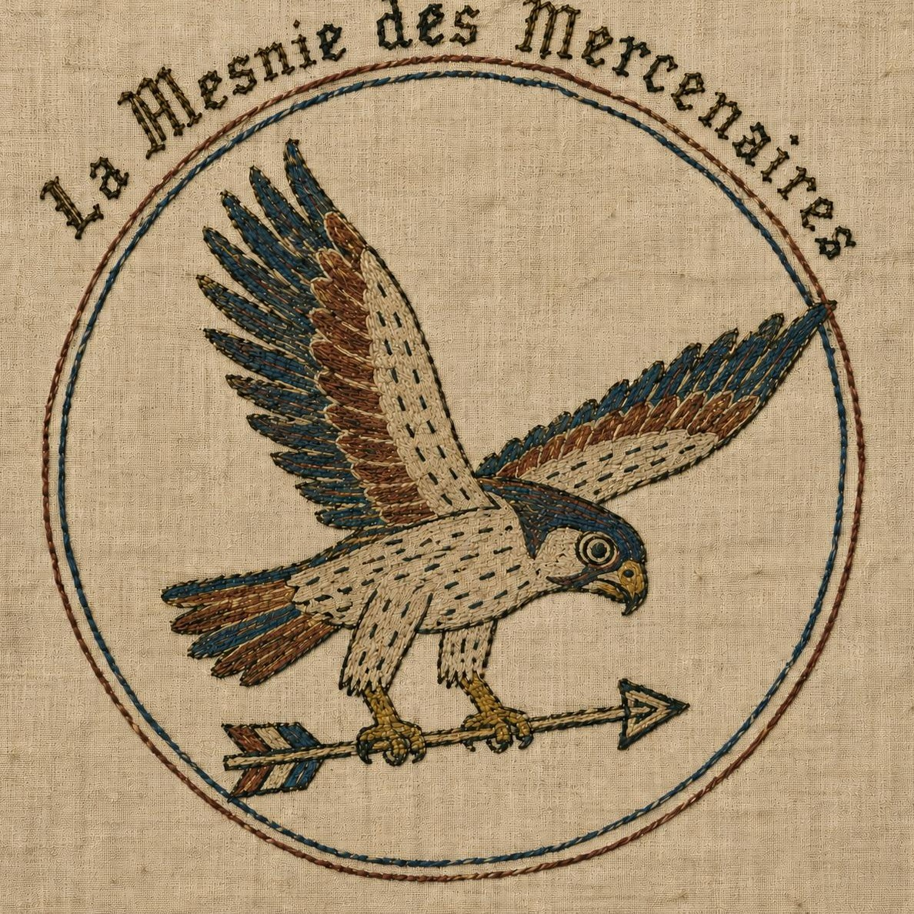

L'association
Notre histoire, notre pratique de l'archerie et les membres du bureau.
Faire connaissance »
Archerie médiévale & reconstitution historique
La Mesnie Des Mercenaires est une association de reconstitution médiévale basée à Saint-Dier-d'Auvergne, dans le Puy-de-Dôme, dont les membres sont, pour la plupart, des archers. Arc à la main, flèches au carquois et tenue d'époque sur le dos, nous faisons revivre l'archerie médiévale lors de tournois, et occasionnellement de fêtes médiévales et d'animations pour le public.
Sur ce site, vous découvrirez qui nous sommes, avec quelques images de nos activités et tournois. Pour toute question, il vous suffit de nous envoyer une missive via le formulaire de contact !
Notre histoire, notre pratique de l'archerie et les membres du bureau.
Faire connaissance »Quelques images de nos tournois, campements et animations.
Voir la galerie »Vie de campement, animations et démonstration de tir à l'arc : ce que nous proposons pour votre événement.
Voir les prestations »